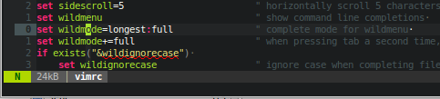
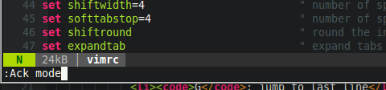

Getting out is difficult?
No! There are plenty of methods!
:q:q!:qa:qa!:x:x!ZZZQ:help
Vim comes with an awesome lot of documentation.
Learn to use it!
Plugins also add documentation to this system
:h save-file:h 'smartcase':h options.txt:h :retab:helpgrep tabsThe help-system is based on the 'tags'-feature.
ctrl-]: jump to the topic under the cursorctrl-t: jump backThis is the mode where you actually type text. It has a few shortucts, such as C-W to remove the word before the cursor
This is the mode you will use the most. Every key, or combination of keys, is a special command.
Visual mode is an improvement of Vim over the old Vi. It let's you visually select text to act upon.
In fact there are 3 different visual modes
v in normal modeoV (capital v) from normal mode or visual modeC-V from normal mode or visual modeI followed by some text and Escgv to reselect the previously selected text in visual mode
: to enter a command./) you are also in Command-line mode.

If you ever end up in Ex-mode by pressing Q or gQ simply type vi<enter> and carry-on.
This is a very temporary mode which you enter when Vim is waiting for further input. For example after pressing d Vim is in Operator-pending mode while waiting for a motion.
G: jump to last linegg: jump to first line30gg: jump to line 30